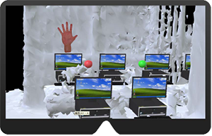

Dashboard
Research Project @ CMU.HCII
Students get lost so fast...
User requirement study
Teacher's "super-power" preferences

The table above shows pairwise comparison matrix summarizing teachers’ preferences between superpowers. Each row shows a superpower that appeared in at least two teachers’ hierarchies, and each column shows a different superpower against which it is being compared (cells on the diagonal represent self-comparisons, and are blacked-out). Cell shade indicates the number of teachers who ranked the row superpower higher than the column superpower, with darker shades indicating greater agreement (minimum observed value is 0, and maximum is 4). “Be able to engage students” is highlighted in grey to indicate that this superpower was not present in all five teachers’ card stacks (by the time a teacher first generated this card, no synonyms were available among the cards generated by previous teachers).
How about some eye "hacking" tool to help?
Design Task
Eliciting and synthesizing teachers’ design requirements for intelligent real-time supports.

To teacher: Put it on and see more!
Our design was based on carefully conducted user case study and detailed research about competitive teaching-aid tools on the market. We believe augmented reality will give teachers maximum interaction to virtual data while keeping environmental awareness and keeping their hands free to minimize the impact on their regular teaching behavior. As shown above, the HoloLens software should function as a monitor to all students and report their learning behavior with explicit visual feedback to the teacher. For example, the "hand-up" figure shows that student stuck at someplace. Colored "hand" shows multi-level urgency for student's need for help. And "Zzz" figure shows up after certain student's PC does not record any input behavior for a certain time. These sample figures help the teacher quickly identifies those who need help but may be too shy to raise their hands, or reminds the student who is idling behind the screen to guide them back to proper learning status.
My job is to help prototype a front end interface for display and testing purpose, to initiate the construction of virtual world in Unity and to integrate Unity build with HoloLen emulator in Visual Studio. The following diagrams present basic data structures for both front end interface and Holographic display implementation.


During my short stay, I mostly focused on Unity coding. The goal is to develop AR environment that deliver visual information. The database of this project is built as a streaming source and the headset is the front-end interface that receives pushed data from database then display it accordingly. The data collection and database population coding is most accomplished by the time I joined the team. For the first phase of my work, I spent a short period of time learning the codebase built with Node.js and Ember.js. This step is important for me to understand how the database is connected to front end and how the web interface functions in order to migrant web data to hologram and visualize information. After that, I started to “translate” web language to hologram language to be displayed in HoloLens headset. I spent time reading papers about AR visual design guidelines and testing automated and gesture-triggerd 3D model behaviors. On the other hand, we tested data streaming in various approaches aiming to seamlessly integrate code and data. We also harmonized the coding style for code reuse.
By the end of my stay, our team has finished designing and constructing the database and pre-scan the designated classroom for testing purpose. We also finished visualizing data with web interface, making Unity interact with database, dynamically generating and placing objects based on retrived data, and rendering simple visual effects and animations. The image below is a demo web interface.

In the visual world, I built figures which simulate visual feedback to remind teacher the learning status for specific student, made them dynamically generated and rendered based on local database input. The object behavior is also optimized to interact with camera movement and gesture.
Meanwhile, the steaming is tested seperately. With intention to bring our product online, more issues like network accessibility and security need to be taken into consideration. In the near future, field testing will be conducted and more information can be collected to aid the decision-making progress.
I remember the first day when I met Kenneth Holstein, a PhD student at HCII, he described to me about what people do at HCII as “researching about cutting edge and ahead of time technologies that will have huge market impact in the future” and he gave me an example of mobile touchscreen research sponsored by Apple at early 21st century, which was more than five years before the first generation of iPhone hit the market. Looking back at the project I worked on during this short three months, I could not agree more. I appreciate all the guidance and help from Dr. Bruce McLaren, Dr. Vincent Aleven as well as admission and support staffs from HCI Institute. I enjoyed working closely with Kenneth Holstein, Zac Yu and all other team members. Finally, I sincerely wish them the best in the future development of Dashboard project.